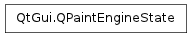

QPaintEngineState ¶

Synopsis ¶
Functions ¶
- def backgroundBrush ()
- def backgroundMode ()
- def brush ()
- def brushNeedsResolving ()
- def brushOrigin ()
- def clipOperation ()
- def clipPath ()
- def clipRegion ()
- def compositionMode ()
- def font ()
- def isClipEnabled ()
- def matrix ()
- def opacity ()
- def painter ()
- def pen ()
- def penNeedsResolving ()
- def renderHints ()
- def state ()
- def transform ()
Detailed Description ¶
The PySide.QtGui.QPaintEngineState class provides information about the active paint engine’s current state.
PySide.QtGui.QPaintEngineState records which properties that have changed since the last time the paint engine was updated, as well as their current value.
Which properties that have changed can at any time be retrieved using the PySide.QtGui.QPaintEngineState.state() function. This function returns an instance of the QPaintEngine.DirtyFlags type which stores an OR combination of QPaintEngine.DirtyFlag values. The QPaintEngine.DirtyFlag enum defines whether a property has changed since the last update or not.
If a property is marked with a dirty flag, its current value can be retrieved using the corresponding get function:
The PySide.QtGui.QPaintEngineState class also provide the PySide.QtGui.QPaintEngineState.painter() function which returns a pointer to the painter that is currently updating the paint engine.
An instance of this class, representing the current state of the active paint engine, is passed as argument to the QPaintEngine.updateState() function. The only situation in which you will have to use this class directly is when implementing your own paint engine.
See also
- class PySide.QtGui. QPaintEngineState ¶
- PySide.QtGui.QPaintEngineState. dirtyFlags ¶
- PySide.QtGui.QPaintEngineState. backgroundBrush ( ) ¶
-
Return type: PySide.QtGui.QBrush Returns the background brush in the current paint engine state.
This variable should only be used when the PySide.QtGui.QPaintEngineState.state() returns a combination which includes the QPaintEngine.DirtyBackground flag.
- PySide.QtGui.QPaintEngineState. backgroundMode ( ) ¶
-
Return type: PySide.QtCore.Qt.BGMode Returns the background mode in the current paint engine state.
This variable should only be used when the PySide.QtGui.QPaintEngineState.state() returns a combination which includes the QPaintEngine.DirtyBackgroundMode flag.
- PySide.QtGui.QPaintEngineState. brush ( ) ¶
-
Return type: PySide.QtGui.QBrush Returns the brush in the current paint engine state.
This variable should only be used when the PySide.QtGui.QPaintEngineState.state() returns a combination which includes the QPaintEngine.DirtyBrush flag.
- PySide.QtGui.QPaintEngineState. brushNeedsResolving ( ) ¶
-
Return type: PySide.QtCore.bool Returns whether the coordinate of the fill have been specified as bounded by the current rendering operation and have to be resolved (about the currently rendered primitive).
- PySide.QtGui.QPaintEngineState. brushOrigin ( ) ¶
-
Return type: PySide.QtCore.QPointF Returns the brush origin in the current paint engine state.
This variable should only be used when the PySide.QtGui.QPaintEngineState.state() returns a combination which includes the QPaintEngine.DirtyBrushOrigin flag.
- PySide.QtGui.QPaintEngineState. clipOperation ( ) ¶
-
Return type: PySide.QtCore.Qt.ClipOperation Returns the clip operation in the current paint engine state.
This variable should only be used when the PySide.QtGui.QPaintEngineState.state() returns a combination which includes either the QPaintEngine.DirtyClipPath or the QPaintEngine.DirtyClipRegion flag.
- PySide.QtGui.QPaintEngineState. clipPath ( ) ¶
-
Return type: PySide.QtGui.QPainterPath Returns the clip path in the current paint engine state.
This variable should only be used when the PySide.QtGui.QPaintEngineState.state() returns a combination which includes the QPaintEngine.DirtyClipPath flag.
- PySide.QtGui.QPaintEngineState. clipRegion ( ) ¶
-
Return type: PySide.QtGui.QRegion Returns the clip region in the current paint engine state.
This variable should only be used when the PySide.QtGui.QPaintEngineState.state() returns a combination which includes the QPaintEngine.DirtyClipRegion flag.
- PySide.QtGui.QPaintEngineState. compositionMode ( ) ¶
-
Return type: PySide.QtGui.QPainter.CompositionMode Returns the composition mode in the current paint engine state.
This variable should only be used when the PySide.QtGui.QPaintEngineState.state() returns a combination which includes the QPaintEngine.DirtyCompositionMode flag.
- PySide.QtGui.QPaintEngineState. font ( ) ¶
-
Return type: PySide.QtGui.QFont Returns the font in the current paint engine state.
This variable should only be used when the PySide.QtGui.QPaintEngineState.state() returns a combination which includes the QPaintEngine.DirtyFont flag.
- PySide.QtGui.QPaintEngineState. isClipEnabled ( ) ¶
-
Return type: PySide.QtCore.bool Returns whether clipping is enabled or not in the current paint engine state.
This variable should only be used when the PySide.QtGui.QPaintEngineState.state() returns a combination which includes the QPaintEngine.DirtyClipEnabled flag.
- PySide.QtGui.QPaintEngineState. matrix ( ) ¶
-
Return type: PySide.QtGui.QMatrix Returns the matrix in the current paint engine state.
Note
It is advisable to use PySide.QtGui.QPaintEngineState.transform() instead of this function to preserve the properties of perspective transformations.
This variable should only be used when the PySide.QtGui.QPaintEngineState.state() returns a combination which includes the QPaintEngine.DirtyTransform flag.
- PySide.QtGui.QPaintEngineState. opacity ( ) ¶
-
Return type: PySide.QtCore.qreal Returns the opacity in the current paint engine state.
- PySide.QtGui.QPaintEngineState. painter ( ) ¶
-
Return type: PySide.QtGui.QPainter Returns a pointer to the painter currently updating the paint engine.
- PySide.QtGui.QPaintEngineState. pen ( ) ¶
-
Return type: PySide.QtGui.QPen Returns the pen in the current paint engine state.
This variable should only be used when the PySide.QtGui.QPaintEngineState.state() returns a combination which includes the QPaintEngine.DirtyPen flag.
- PySide.QtGui.QPaintEngineState. penNeedsResolving ( ) ¶
-
Return type: PySide.QtCore.bool Returns whether the coordinate of the stroke have been specified as bounded by the current rendering operation and have to be resolved (about the currently rendered primitive).
- PySide.QtGui.QPaintEngineState. renderHints ( ) ¶
-
Return type: PySide.QtGui.QPainter.RenderHints Returns the render hints in the current paint engine state.
This variable should only be used when the PySide.QtGui.QPaintEngineState.state() returns a combination which includes the QPaintEngine.DirtyHints flag.
- PySide.QtGui.QPaintEngineState. state ( ) ¶
-
Return type: PySide.QtGui.QPaintEngine.DirtyFlags Returns a combination of flags identifying the set of properties that need to be updated when updating the paint engine’s state (i.e. during a call to the QPaintEngine.updateState() function).
See also
- PySide.QtGui.QPaintEngineState. transform ( ) ¶
-
Return type: PySide.QtGui.QTransform Returns the matrix in the current paint engine state.
This variable should only be used when the PySide.QtGui.QPaintEngineState.state() returns a combination which includes the QPaintEngine.DirtyTransform flag.